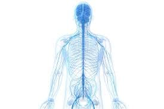
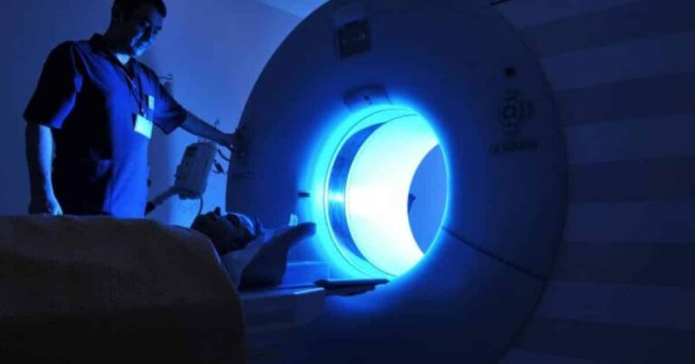
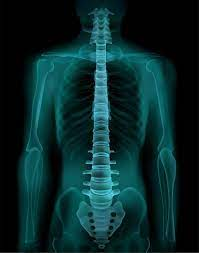
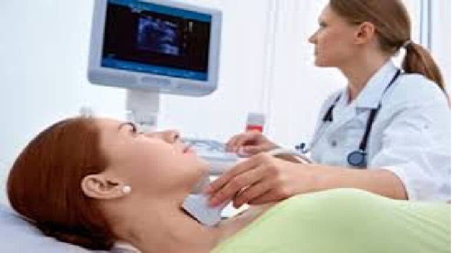
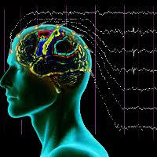
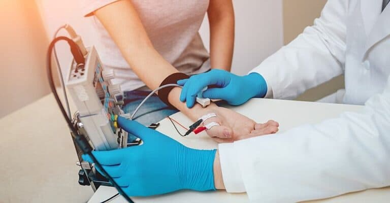

Для точного встановлення діагнозу та призначення належного лікування
застосовується комплекс методів обстеження, які можна розділити на
кілька груп
Клінічні методи, які включають в себе:
-
Анамнез: збір інформації про скарги, особливості перебігу захворювання та загальний стан людини.
-
Об’єктивне обстеження: огляд, пальпація, перкусія, аускультація.
-
Неврологічне обстеження: оцінка функції черепно-мозкових нервів, рухової активності, чутливості, рефлексів та координації рухів.
- 
-
Спеціалізоване обстеження включає: оцінку стану хребта та положення хребців (зміщення, ротації) та постави. Оцінку стану м’язової системи, включаючи силу та тонус, а також виявлення тріггерних точок.
Лабораторні методи включають в себе:
-
Загальний аналіз крові дозволяє оцінити загальний стан організму, наявність запального процесу, анемії, інфекції.
-
Біохімічний аналіз крові дає змогу оцінити функціонування внутрішніх органів, виявити наявність інфекцій, пухлин та аутоімунних захворювань.
-
Мікробіологічне дослідження Мікробіологічне дослідження дозволяє виявити патогенні мікроорганізми, викликачів інфекцій
-
Імунологічні дослідження дозволяють виявити реакцію імунної системи на захворювання.
-
Магнітно-резонансна томографія (МРТ).
 -
Комп’ютерна томографія (КТ).
-
Рентгенографія.
 -
Ультразвукова допплерографія судин голови та шиї.
 -
Електроенцефалографія (ЕЕГ).
 -
Електронейроміографія стимуляційна або гольчата.

Вибір методів обстеження залежить від скарг пацієнта, анамнезу, результатів об’єктивного обстеження та клінічної картини захворювання.